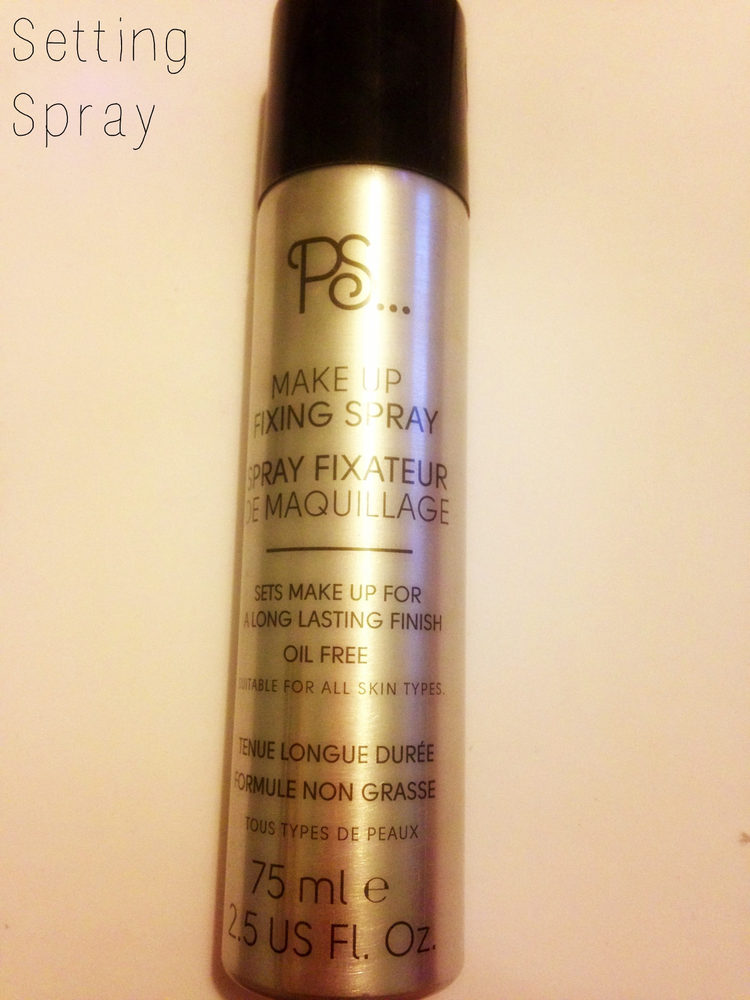

Place your fingers into the egg and rinse both brush and egg under water. Add soap/baby shampoo/ brush wash to your egg and begin to swirl into the different textures until water is clear. Remove excess water from the brush, reshape and leave to dry.
Spray before AND after applying setting powder. Spraying your blended cream makeup before powder will create a protective layer and longer lasting finish. Spraying after you apply your powder products will take away the “powdery” look of your makeup and blend everything together. These sprays will are gonna have a dewier finish, too.
Concealer gets rid of your under eye circles and redness, but creasing is a common side effect. Instead of loading a bunch of powder onto a makeup brush, simply dampen your sponge, then apply a bit of powder directly over your concealer to set it